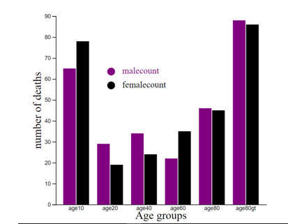
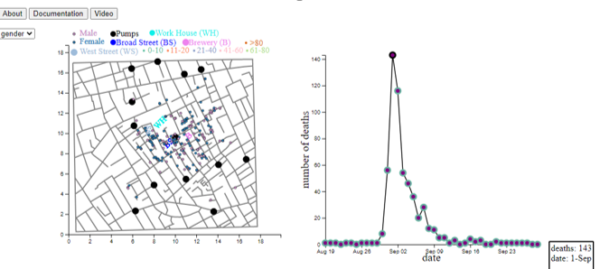

The reason I chose to arrange my graphs this way was to have a specific order to myself. I felt that there were lot of modules that needs to be acheived in given span of 1 month. In order for me to maintain clarity on what ui am doing i this process and what I want show through this visualization, I have drafted everything on the paper in a way what felt correct to me.
In the distribution graph for age-sex, I observed from ages 0-10 have more female deaths than male. age>80 has the most male deaths.
Age group 11-20 has lowest deaths.

More deaths were recorded near and around the pump of Broad street. For instance, 143 deaths on sep-1. Most of the deaths surrounded that pump.
